Spaces
Start by giving it a home. One space for a trip, one for uni, one for recipes, each with its own look. Swipe with two fingers to move between them.
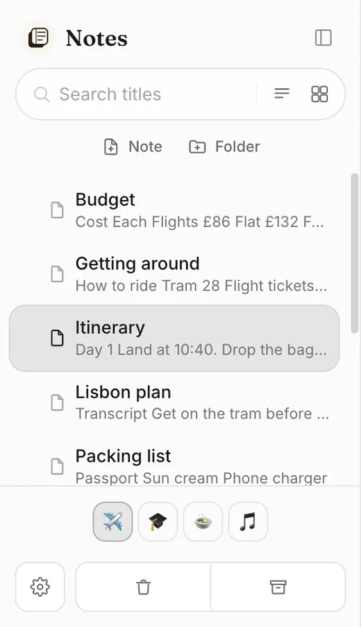
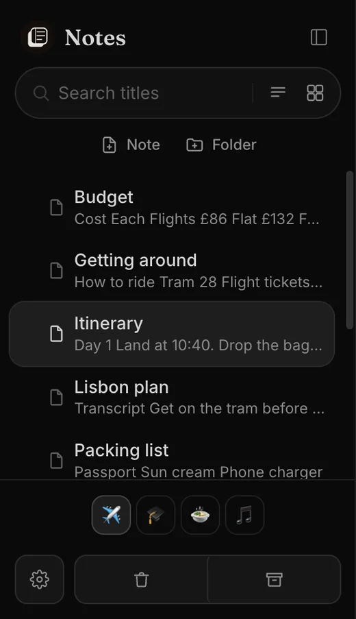
 Notealise
Notealise
Start by giving it a home. One space for a trip, one for uni, one for recipes, each with its own look. Swipe with two fingers to move between them.


Catch the idea before it’s gone: a friend’s tips, a lecture, a tune in your head. Press Transcribe and the words appear underneath, worked out on your own computer.
Sam’s Lisbon tips
Get on the tram before nine or you won’t get a seat.
Take a jumper to Sintra, even in June, because the hills get cold up there.
Walk up to the castle for sunset, but go early, because the queue gets long.
The custard tarts in Belém are worth the wait, so have two.
And if you get lost in Alfama, don’t worry. Everyone does, and that’s the best bit.
Trim the ends, cut the long pauses and keep only the good part.
Point to the exact second. One click plays it from there.
Sam’s Lisbon tips
It carries on playing while you move to another note.
Turn the rambling into a plan. Headings, bold and lists sit in the bar above your note, or type / for everything else. Colour the thing you can’t afford to miss.
12 to 16 June, four of us.
Book the flat by Friday.
For anything with steps to tick off. Packing, revision, the weekly shop.
Fold away what you don’t need yet and open it when you do. Backup plans, exam answers, film spoilers.
Tile museum in the morning, then custard tarts in Belém.
Message the host. The keys are at the café until ten.
Line things up and compare them. Places to stay, revision dates, ingredients.
| Place | A night | Book through |
|---|---|---|
| Flat in Alfama | £132 | Host’s website |
| Hostel in Baixa | £96 | Hostel’s website |
| Guesthouse in Belém | £148 | Sam’s cousin |
Write your sums the way they look on paper. Budgets, fractions, the equations in your revision.
Flights £86 each. Tram pass £28 each.
Flat = £132 × 4 nights / 4 people = £132
Food = £28 × 4 days = £112
Total = 86 + 132 + 112 + 28 = £358
Saving = £358 / 12 weeks = about £29.83 a week
\text{Saving} = \dfrac{\pounds358}{12\text{ weeks}} \approx \pounds29.83\text{ a week}DoneConnect one note to another and follow it with a click. Days to a trip, topics to sources, characters to chapters. Try these.
Keep everything for the plan in the plan. Drop in a map, paste a booking page, attach your tickets.
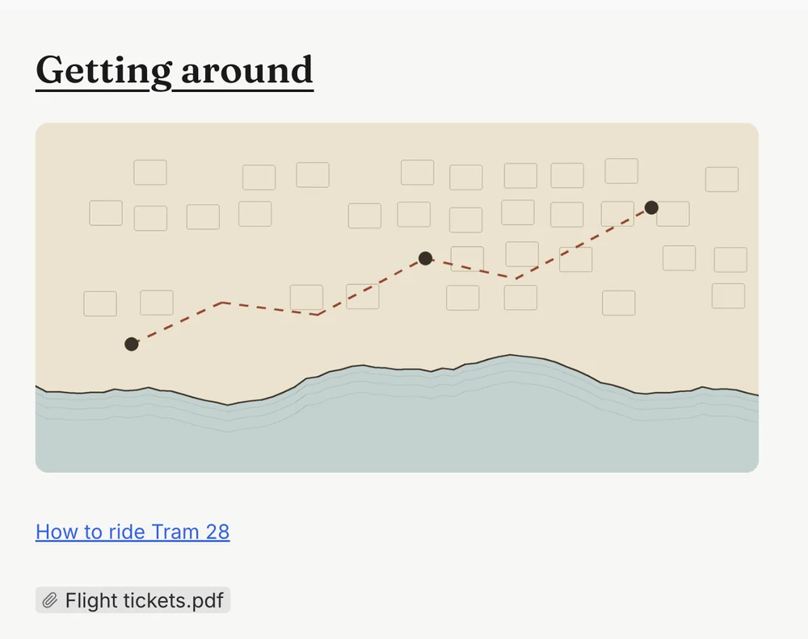
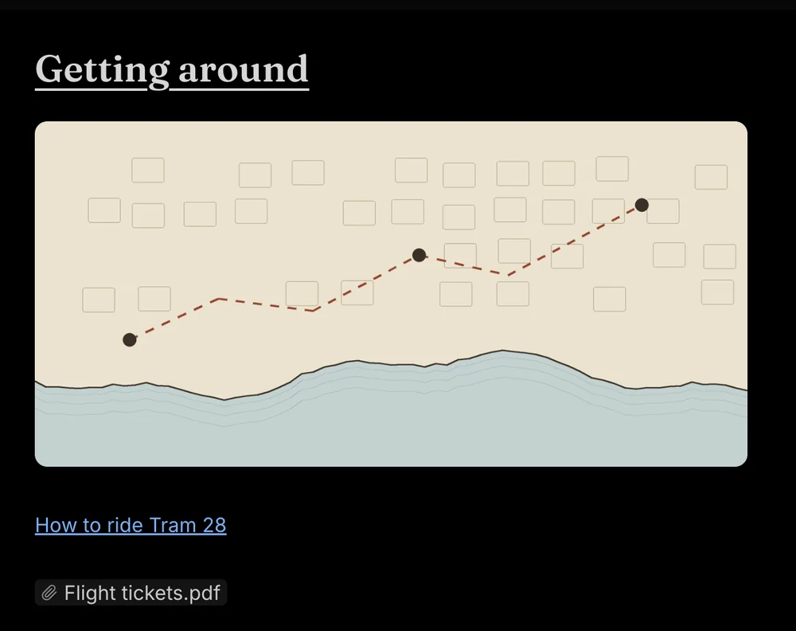
Find anything in seconds. Press Cmd or Ctrl and P to jump to a note by name, or search what your notes actually say.
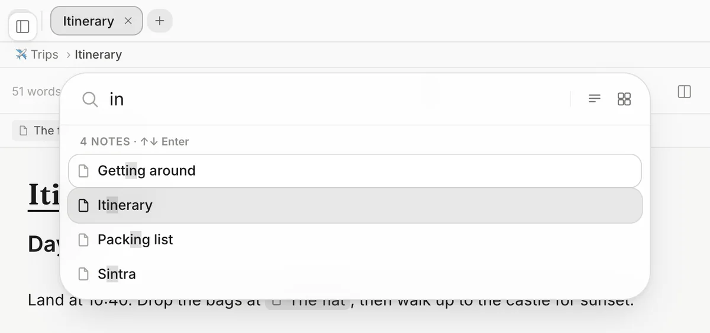
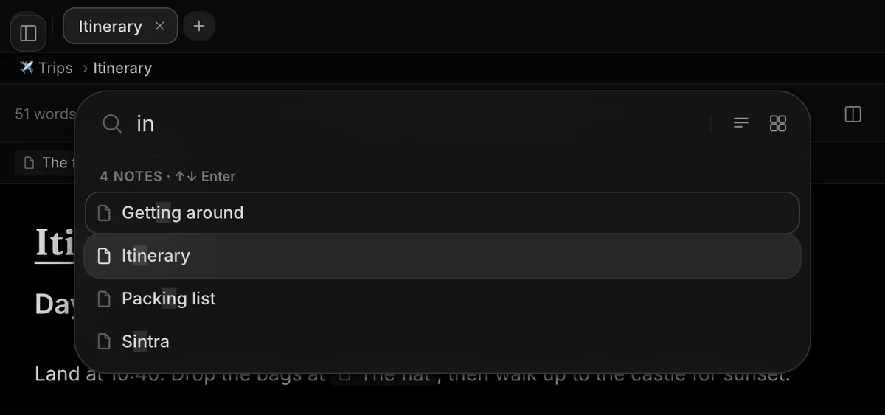
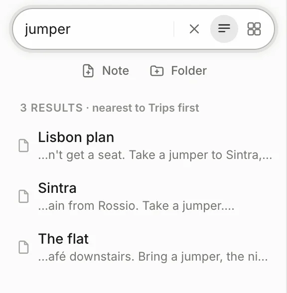
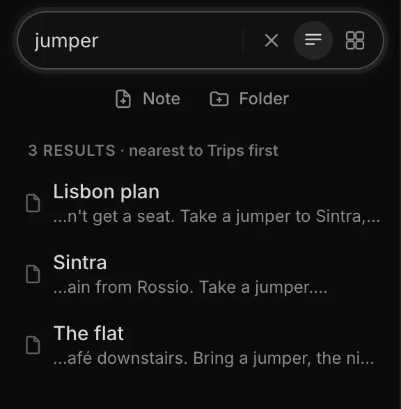
Open up to three notes side by side in one tab, so what you’re reading and what you’re writing stay in view together.
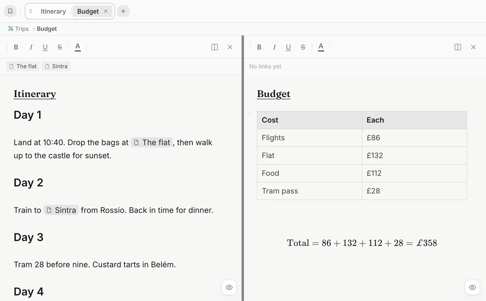
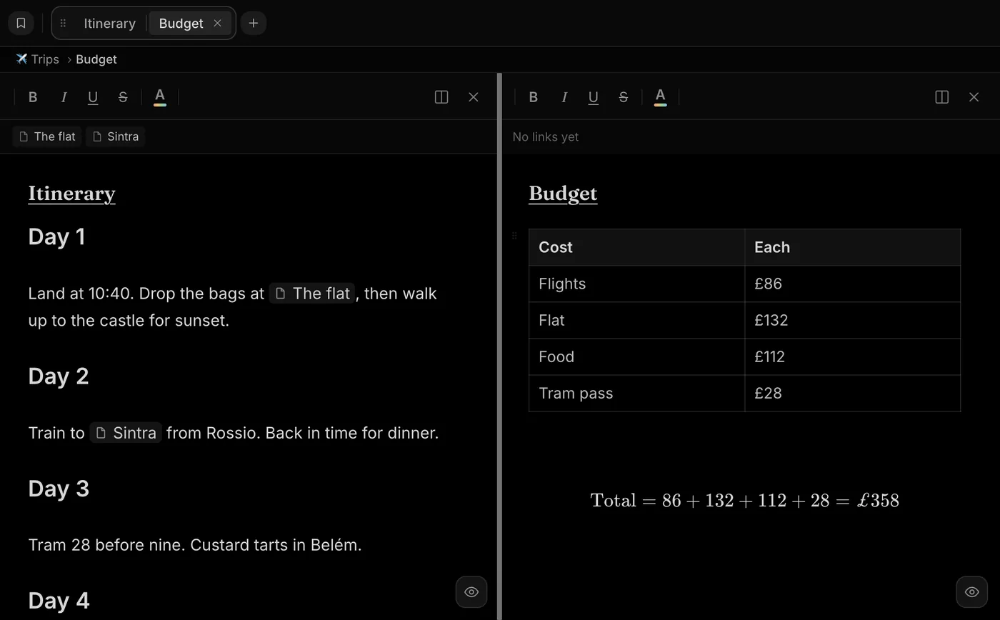
Make it feel like yours. Choose the paper, the theme and the font for each space. Try them here.
Day 1. Land at 10:40, then up to the castle for sunset.
Day 2. Train to Sintra. Back in time for dinner.
Day 3. Tram 28 before nine. Custard tarts in Belém.
Cut something you needed? Your notes keep earlier copies, so you can see what changed and put it back.
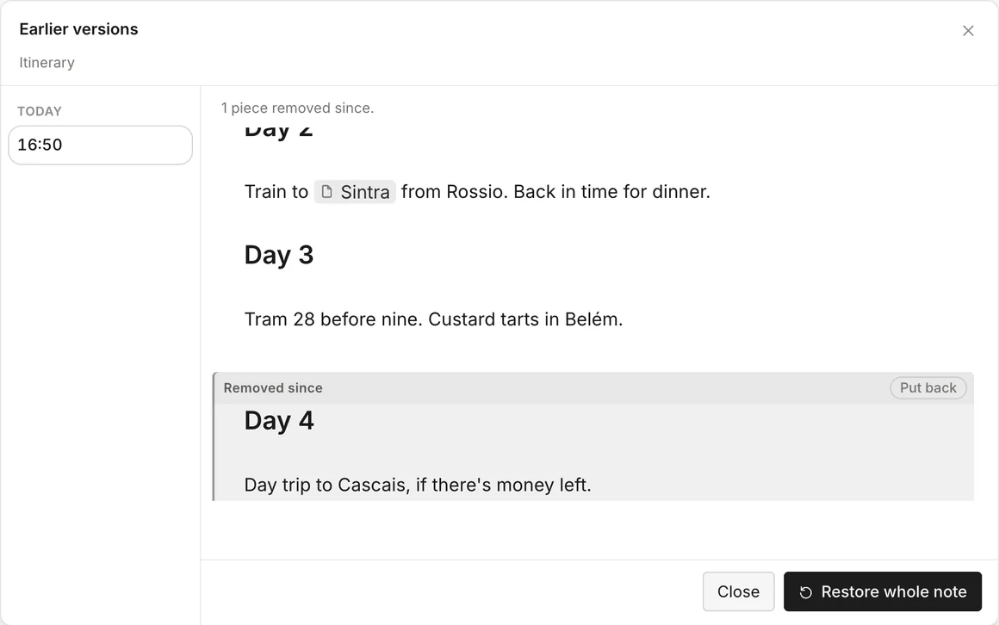
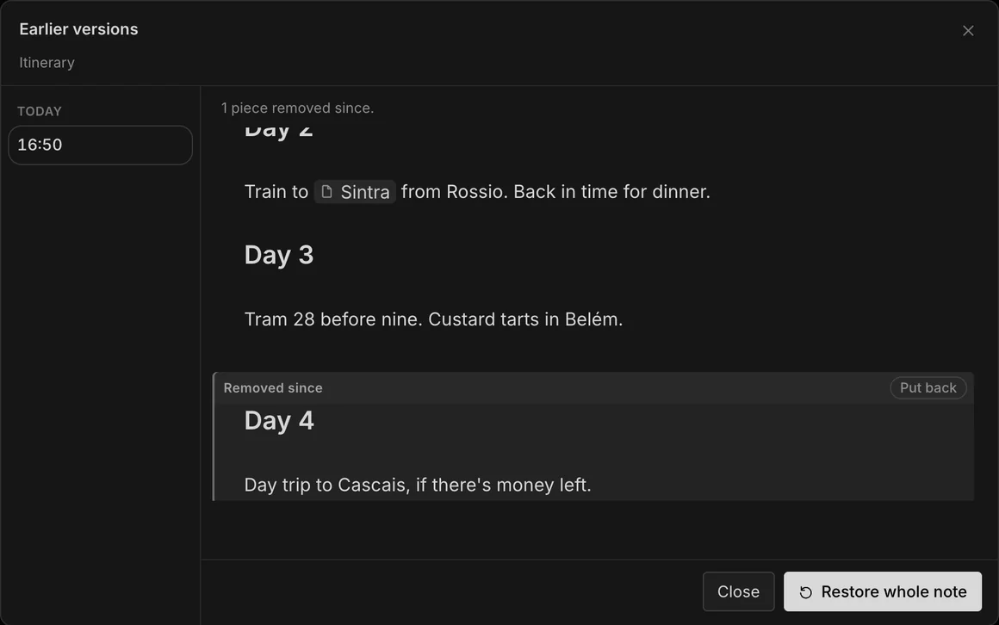
Gone off an idea? Deleted notes wait in the Bin until you empty it, so nothing disappears by accident.
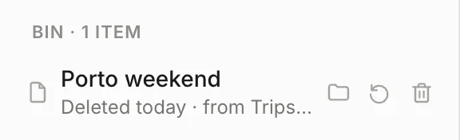
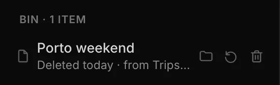
Done with it, but not ready to lose it? The archive keeps old notes out of your way, still searchable and ready to put back.
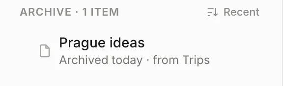
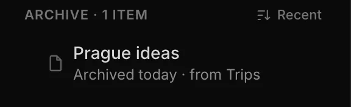
When the plan’s ready, send it to your friends as a PDF or a web page, or print it to take with you. Drop the itinerary in the group chat, stick the packing list on the fridge, or print out an idea to scribble on.
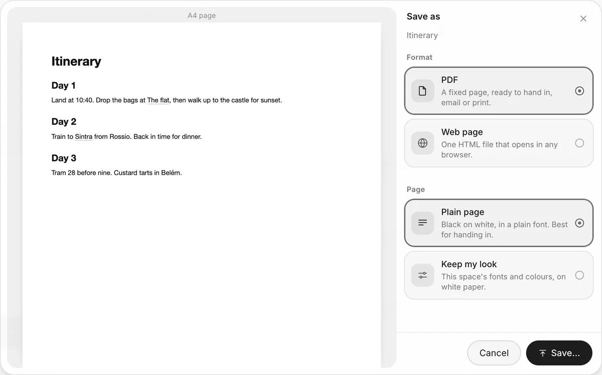
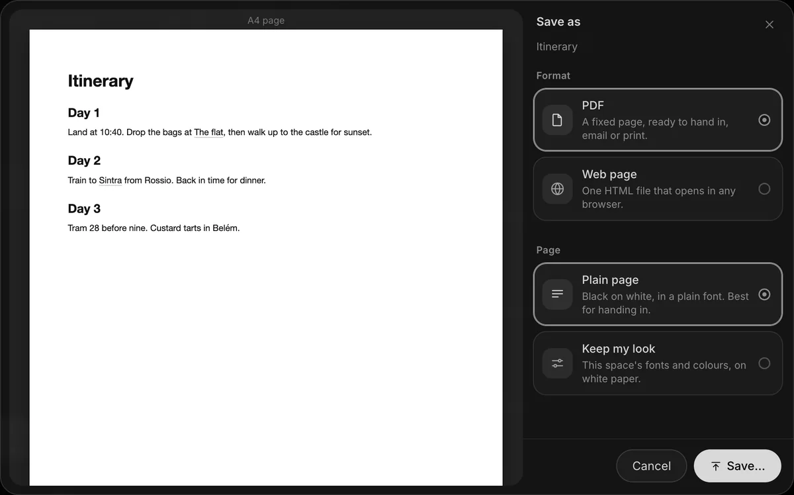